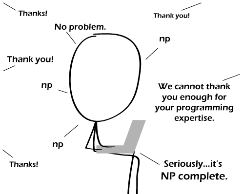

Comic JK 635
When I Feel Like It
⇤
<
?
>
⇥

⇤
<
?
>
⇥
Forum
.
RSS
.
Digg
.
Facebook
.
Reddit
.
Twitter
.
Stumbleupon
Enter your thoughts on number 635 here. Please, no spamming, trolling, phreaking or hard problems. I once knew a guy who could explain P?=NP in O(1) >How do you measure the complexity of the input? "Hi. Can you explain P=NP to me in less than 500 words?" That's not O(1). >>Degree of detail requested? If he can explain it in the same timeframe regardless of how detailed, then it would be O(1). Though unless his answer is to poop on the floor, this seems unlikely. >>>P!=NP so lets all get fucking over it already >>>>By definition. I've never understood this whole concept. If someone discovers a means of solving a problem currently classified as NP using the same means as solving a P problem, that doesn't mean P=NP, that just means the guy who classified it as an NP problem previously was wrong. >>>>>No. If so, it wasn't a P problem. In all seriousness: The concept isn't as easy as it is often portrayed. That's why it's not taught in the first semester, but way later. >>>>>No (2). By definition, P is a subset of NP. The question is whether or not it is a _proper_ subset. >>>>>No (3). "that just means the guy who classified it as an NP problem previously was wrong." Which is why proofs of NP-completeness need to be checked. >>>>>No (4). NP doesn't mean Non-Polynomial,it just means that it can be solved in polynomial time on a nondeterministic touring machine. >>>>>Noob.